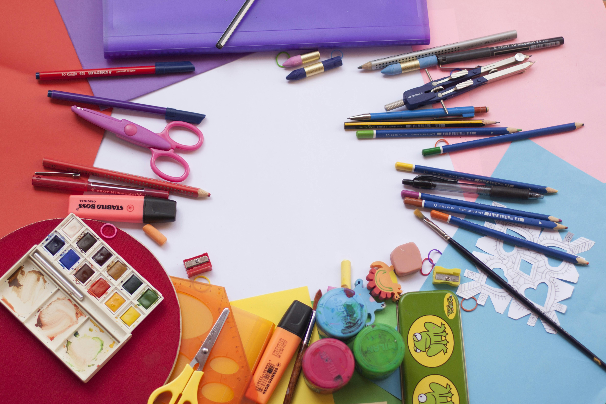

2005: Primeros años
Nací el 10 de octubre de 2005 en San Salvador, en una familia llena de amor y apoyo.
Mi nombre es Reina Sosa y soy estudiante de Ingeniería de Software y Negocios Digitales
Nací el 10 de octubre de 2005 en San Salvador, en una familia llena de amor y apoyo.
Mis padres siempre se preocuparon por que yo tuviera una mejor educación de la que ellos hubieran deseado tener, y por eso, a los 2 años, me inscribieron en el kínder de un colegio llamado "Colegio Nazareth", en el cual estudié durante toda mi vida.
En marzo de ese mismo año nació mi hermano menor, quien siempre me acompañaba en mis travesuras.
Desde pequeña siempre quise tener un perrito que me hiciera compañía y fuera un amigo fiel; tanto así, que le decía muy seguido ese deseo a mi papá. Un día, mientras íbamos a recoger a mi abuela del trabajo, en el camino nos encontramos con un señor que estaba vendiendo cachorros en la calle. Logré convencer a mi papá de comprar uno. Nos bajamos donde estaba el señor y, entre tantos perritos, hubo uno que sobresalió del resto: una bolita de pelos adorable. Cuando lo miré, supe de inmediato que él estaba destinado a ser parte de la familia. Lo acogimos con mucho cariño y le pusimos por nombre “Max”.

Al final de cada año escolar, mi papá inscribía a mi hermano y a mí en campamentos de verano, donde nos enseñaban distintos deportes como tenis, baile y natación, que siempre fue mi favorito.
Al final de cada año, mi colegio premiaba a los tres alumnos más destacados. Durante varios años soñé con obtener una de esas medallas, pero nunca lo lograba. Hasta que un año me esforcé muchísimo y logré llevarme el primer lugar. Desde entonces, siempre obtuve la medalla de primer lugar.
Durante este año sucedieron muchas cosas como:

Durante este año incié mis estudios de educación superior en la ESEN en la carrera de Ingeniería de Software y Negocios Digitales
Por otro lado, tuve la oportunidad de viajar a Francia y China, que en definitiva fue una de las mejores experiencias de mi vida.